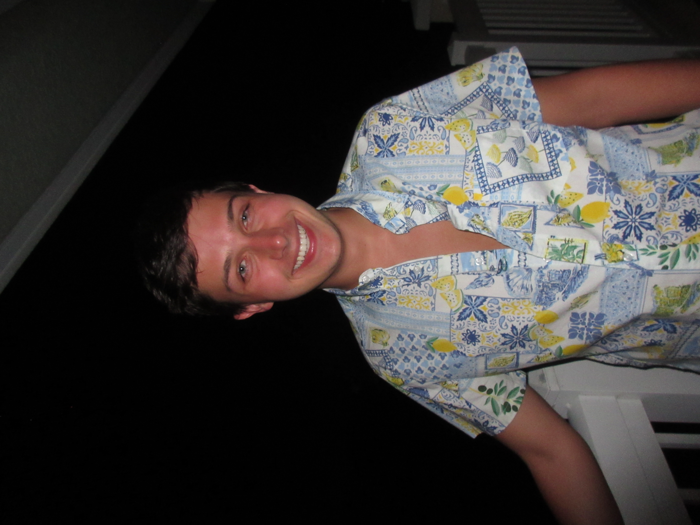
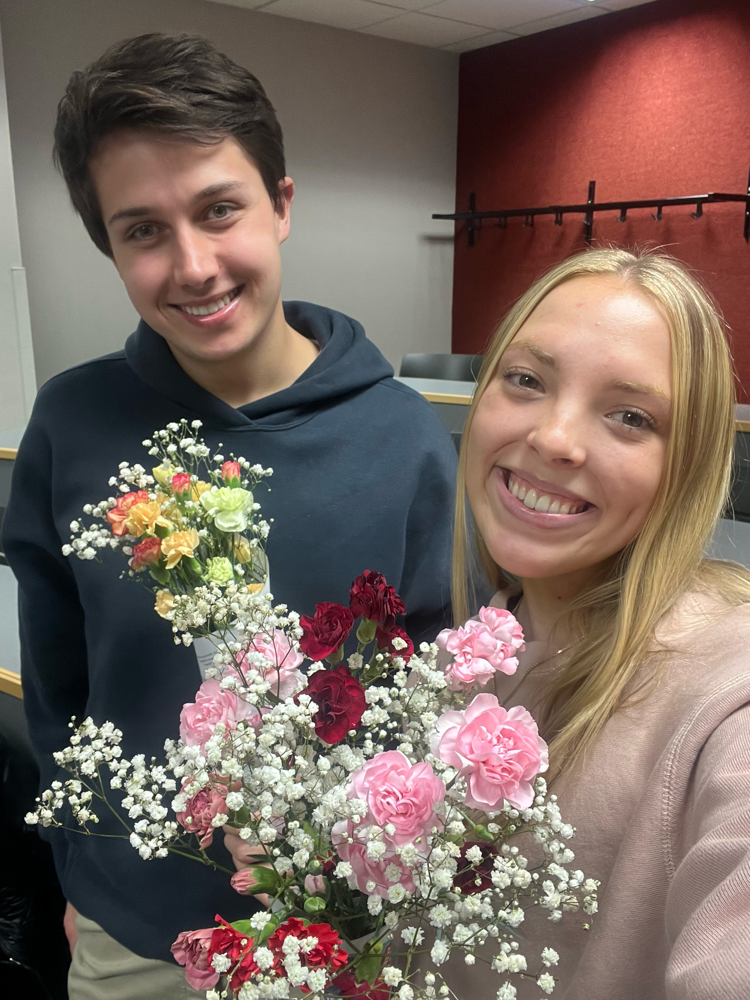
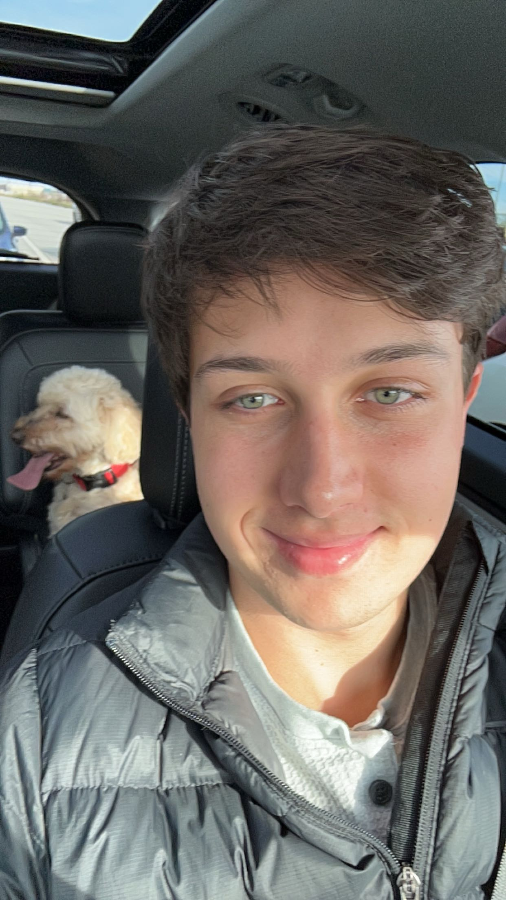

I am passionate about the intersection between data and human connection, using insights to create meaningful marketing strategies to help people find products and experiences that best fit their needs.
I'm originally from Germantown, Wisconsin, and when I'm not working or studying, I enjoy playing tennis, swimming, traveling, baking, reading, writing, and spending time with friends.
With four internships and leadership experience in the American Marketing Association, I've built strong communication skills, strategic decision making capabilities, and digital marketing expertise. I aspire to shape strategic decisions for brands I'm passionate about in industries like entertainment, fashion, or CPG.
  